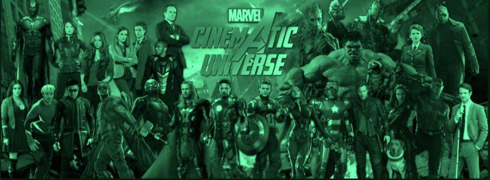
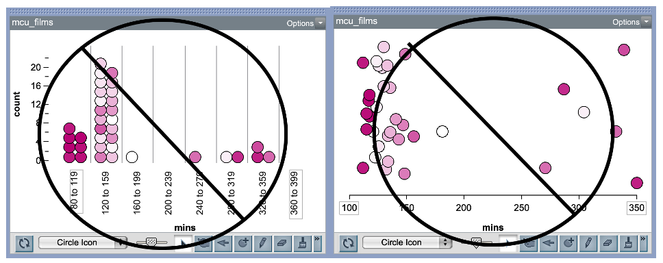

LEARNING TO USE TINKERPLOTS
Directions
The information in the TinkerPlots™ help movie you watched will help you learn how to use many of the features of TinkerPlots™ that we will be using in the course. Use what you learn to complete this activity. Answer all of the numbered questions in a word-processing document.
Part I: Marvel Cinematic Universe: Runtime
Use TinkerPlots™ to open the mcu.tp3 file (within TinkerPlots™ select File > Open...). These data include information about Marvel Cinematic Universe Titles (MCU).
Create a Dot plot
- Create a dot plot of the movie runtime (in minutes) by dragging the
runtimeattribute to the plot’s x-axis. - Fully separate the cases. There shouldn’t be any bin lines in the plot. Remember bin lines are the vertical lines separating the data into bins corresponding to ranges of numbers.
- Vertically stack the cases in the plot so they are organized. If your points are floating like the ones in the plot below then it is not vertically stacked.

- Copy and paste your final (fully separated and vertically stacked) plot into a word-processed document.
Add to Your Plot
Next we will add the average of the to your plot.
- Highlight the plot by clicking on it, and select the
Averages (Mean)button in the upper toolbar (the triangle). This should add a triangle to your plot underneath the mean value. - With the plot still highlighted, choose the
Averages Optionsin the upper toolbar (the upside-down triangle next toAverages) and selectShow Numeric Value(s). This should display the numeric value of the mean in the plot.
- Copy and paste this plot (with the mean and the numeric value of the mean displayed) into your word-processed document.
Identifying cases
- In the plot, click on a case that is near the mean runtime. Identify the MCU title you clicked on and its runtime. Add this to your document.
The runtime variable was recorded as a number. This is called quantitative data. When we record variables as a number, our dotplots of that variable will not have any bin lines dividing the data. However, we might collect data that is not a number, but instead is a category. This is called categorical data. For example, season is an example of a categorical variable (recorded as summer/not summer). When we create a dot plot of categorical data, it will have a bin for each category, even when fully separated.
- There are different storylines, called “phases”, in the Marvel Cinematic Universe. Create a dot plot of the phase values by dragging the
phaseattribute to the plot’s x-axis. Separate the values so that the cases are separated into the four phases (there will still be a vertical line separating them). Also vertically stack them so they are organized. Display the counts (Counts N) and percentages (Counts %) for each phase on the existing dot plot. Copy and paste this plot into your word-processed document.
Call over the instructor or TA to check your work and make sure you are on the right track.
Part 2: Marvel Cinematic Universe: Runtime by Format
Create a new dot plot of the runtime attribute (place this attribute on the x-axis). Fully separate the values (no bin lines) and vertically stack them so they are organized.
- Add the
formatattribute to the y-axis of the plot. This will separate the runtimes for movies and tv shows. - Add a divider to the existing dot plot by highlighting the plot and clicking the
Dividerbutton in the toolbar. This will divide the plot into three distinct parts: a shaded middle part and two unshaded ends. - Once the divider has been added to the plot, display percentages on the plot. Percentages should be displayed for all three parts of the divided plot.
- Move the endpoints of the divider so that the shaded part covers the area where most of the data points fall for each format. Copy and paste this plot, with the divider and percentages, into your word-processed document.
- Use the endpoints of the divider to complete this statement: Most MCU movies are between ___ and ___ minutes long.
- Based on the plot, comment on potential differences in runtimes between tv shows and movies. How do they compare?
- Identify the movie that has the longest runtime.
- Add the mean of the runtimes (triangle) and the numerical value of the mean to the plot. Find the runtime for Ms. Marvel, and add a vertical reference line at that value. Change the position of the vertical reference line by double clicking on the red square at the top of the vertical reference line, and then type in the value where you would like the line to be located. Copy and paste this plot (with the displayed means and the vertical reference line) into your word-processed document.
- Based on the plot, how does the runtime for Ms. Marvel compare with the other TV shows? Explain using evidence from your plot.
Call over the instructor or TA to check your work for #9 and #10. This is your exit ticket for the day. Also share the word-processed document with all the groups’ members.